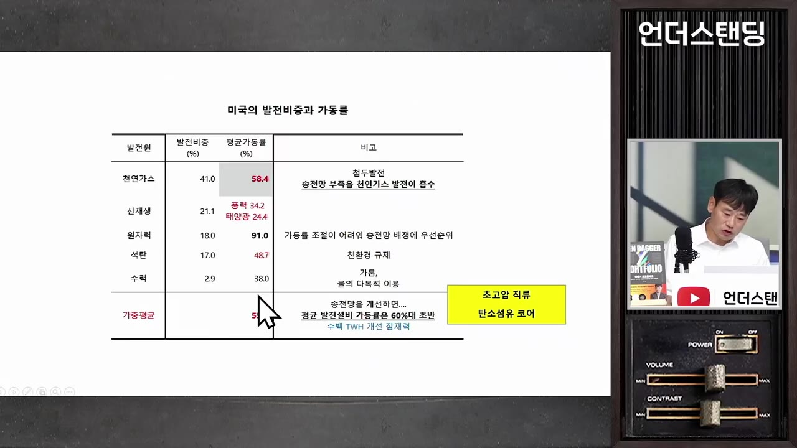
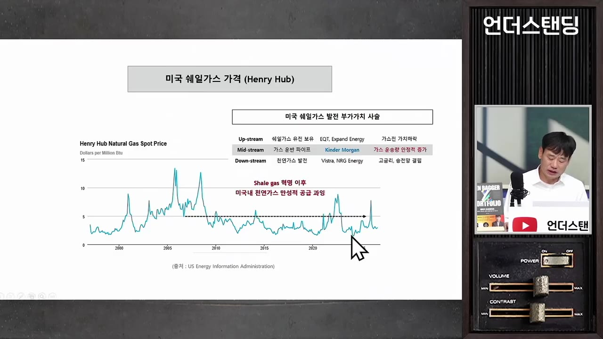
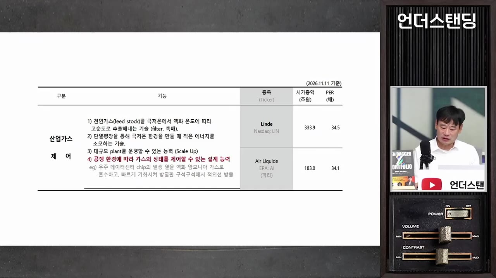

[김학주 교수 1부] 데이터센터 지어 놓고 놀고 있다. 발전소보다 급한 미국 송전망 병목. 초고압 전선·가스관·원전 중 진짜 수혜주는? | 26년 11월 12일 방송
▶ 원본 영상 보기한눈에 보기
- 김학주 교수는 AI의 진짜 병목을 계산 능력이 아니라 전기, 그중에서도 송전망이라고 본다. 데이터센터는 1~2년이면 짓지만 전기 연결에 5년 이상 걸려, 그동안 공실 임차료가 "생돈"으로 나간다는 주장이다.
- 미국 발전소 평균 가동률은 55.9%다. 발전소를 더 짓기보다 송전 용량을 키우면 기존 발전소만으로 미국 발전 능력이 약 10% 늘 수 있다고 한다.
- 당장의 대안은 천연가스 발전이다. 그러나 발전 자체보다 가스를 파이프로 옮기는 미드스트림과 산업용 가스(액화·기화) 업체가 안정적인 수혜 후보로 제시된다.
- 소형모듈원전(SMR)은 무탄소·저연료비 때문에 궁극적 대안이지만, 고금리와 긴 건설 기간이 발목을 잡는다. 신재생은 출력 변동이 커서 데이터센터에 직접 쓰기 어렵다고 본다.
- 하락장에서는 처음 샀던 이유를 적어 둔 기록으로 판단해야 한다는 조언도 나온다.
이런 분께 도움이 됩니다
- AI·데이터센터 관련주를 들고 있으면서 "전력이 왜 병목인지, 어디가 수혜인지" 정리하고 싶은 분.
- 하락장에서 매도 충동이 올 때 쓸 원칙이 필요한 분.
- 이 영상은 1부이고, 마지막에 "AI를 방해하는 두 번째 요소" 이야기가 이어질 예정이라 끊긴다.
핵심 내용
핵심 주장: AI의 병목은 전기, 특히 송전망
- AI는 계산 능력이라서 신소재·신약 개발, 자율주행, 로봇 등 돈을 낼 곳이 많고 수익성이 나쁠 수 없다는 것이 교수의 기본 시각이다. (6:30)
- 시장의 우려: 구글 검색광고 매출 증가율이 작년 약 17%에서 12%로 둔화됐다. 클라우드는 매출이 두 배씩 늘지만 영업이익률이 15%로, 검색광고(60~70%)보다 낮다.
- 교수의 반문: 서로 데이터센터를 쓰겠다고 몰리는데 왜 클라우드 이익률이 낮은가. 수요가 문제가 아니라 서비스할 인프라(전기)가 부족해서라는 해석이다.
- 전기 부족은 수익성에 직결되고, 투자자금 조달에도 영향을 준다.
- 돈은 시중에 많지만 "전기가 없는데 어떻게 정산(매출화)할 거냐"는 의문이 펀딩 문제로 번진다.
- 금리가 높아 빚을 내기 어렵고, 잉여현금흐름이 마이너스면 투자를 감당하지 못한다.
💡 AI 수익성 문제의 뿌리는 수요 부족이 아니라 전기·인프라 부족이라는 것이 교수의 진단이다.
전기 부족이 수익성을 깎는 경로
🔁 데이터센터가 "생돈"을 태우는 과정
- 선임차 계약
- 건물 완공
- 전기 연결 대기
- 공실 임차료
- 정치 변수도 있다. 민주당이 "데이터센터 인근 전기료가 올랐다"며 건설 지연을 주장할 수 있고, 그러면 AI 투자에 의존하는 미국 경제가 흔들린다. 교수는 "세계 경제가 자살하는 경우는 못 봤다"며 견제와 타협으로 균형을 찾을 것이라 본다.
발전소 증설보다 송전망 확대가 효과적인 이유
- 미국 데이터센터 전력 수요는 지금 약 200(자막상 단위 불분명, GW 추정)이고, 2030년에는 500~600까지 늘어 약 400이 더 필요하다. (12:30)
- 폐쇄 원전 3기를 재가동해도 보충되는 양은 약 2(자막상 단위 불분명)에 그친다.
- 지금도 발전소가 잘 안 돌아가는 이유는 송전망이 꽉 차서 전기를 더 넣을 수 없기 때문이다. 발전소는 여력이 있다.
- 미국 평균 발전소 가동률 55.9%, 원전 91%(항상 켜 두므로 송전망 우선 배정), 천연가스 58.4%.
- 송전망이 넓어지면 가스 발전소(첨두 발전, 껐다 켰다 하는 발전)의 가동률이 올라 가스 발전 용량이 약 24% 늘고, 가스 비중이 41%라 미국 전체 발전 능력은 약 10% 늘 수 있다.
- 미국의 연간 발전량은 4,530(단위 불분명, TWh 추정)이라 10%면 약 453이다. 2030년대 필요량을 송전 확대만으로 채울 수 있다는 계산이다.
- 새 송전선 건설은 현실적이지 않다.
- 발전소 신청 후 전력 연결까지 7~8년, 펜실베이니아·뉴저지·메릴랜드 일대는 12년까지 걸려 신청을 포기하는 비율이 70~80%다. (13:40)
- 주민 반대가 심하고 설치할 만한 곳은 이미 다 썼다. 그래서 기존 길의 용량을 넓히는 방식만 남는다.
💡 발전소를 짓는 것보다 있는 송전선의 "도로 폭"을 넓히는 쪽이 효과가 크다는 주장이다.

송전 용량을 키우는 두 가지 기술
- 초고압 직류(HVDC): 교류는 파형이 지그재그라 전선을 많이 못 쓰고, 직류는 직선이라 전류를 2~3배 실을 수 있다. (14:49)
- 직류는 변압이 안 되므로 1초에 수만 번 끊었다 이어 교류로 바꿔 주는 인버터(변환 장치)가 필요하다.
- 교수가 언급한 기업은 "G번노바", "폴티프"이고, 자막 표기라 정확한 사명은 확인이 필요하다.
- 탄소섬유 심선 전선: 전선 중심의 철심을 인장강도가 훨씬 강한 탄소섬유로 바꾸면 심을 얇게 해도 되어 전기가 통하는 알루미늄을 더 많이 감을 수 있다.
- 전기가 많이 흐르면 열로 알루미늄이 녹을 수 있어 지르코늄을 섞어 막는다. 이렇게 2~3배 더 싣는다.
- 교수가 언급한 기업은 스미토모전기 계열("스미도머 전기", 자막 표기)이다.
- 두 방법을 합치면 송전 여력이 4~5배까지 커질 수 있다고 한다.
- 보급률은 아직 약 1%지만, 새로 깔거나 교체하는 송전망의 30~40%는 이미 선진 방식을 쓴다.
- 전체 교체에는 20~30년이 걸린다.
- 전선 가닥 수를 늘리는 식은 한계에 와 있다. 저항·늘어짐 제약을 이미 최대로 맞춰 설계해 놨기 때문이다.
발전원 비교: 천연가스 vs SMR(소형원전)
| 구분 | 천연가스 | SMR(소형모듈원전) |
|---|---|---|
| 건설 기간 | 2~3년 | 4년이라 하지만 지어 본 경험이 적어 더 걸릴 것 (대형 원전은 10년) |
| 연료비 비중 | 발전 단가의 70~80%, 가격 변동 위험 | 10% 미만 |
| 탄소 | 배출 (수소 혼소·포집 필요) | 무탄소 |
| 약점 | 터빈 1기 약 500MW라 데이터센터(10~50MW → 요즘 약 100MW)에 비효율 | 고금리·긴 건설 기간 |
- 천연가스가 대세가 된 이유는 데이터센터를 놀릴 수 없어 "당장은 가스밖에 없다"는 것이다. 데이터센터를 가스 발전소 옆에 붙이고, 계산 결과는 통신망·레이저 광통신으로 빼내는 편이 송전망 해결보다 낫다고 본다. (19:56)
- 빅테크가 무탄소를 강조하는 흐름은 중국 추격이 거셀수록 이어질 것이므로 SMR이 다시 부각될 수 있다고 본다.
- 신재생 발전 비중은 미국 21%, 중국 35%다. 중국은 석탄도 약 56%다.
- 전력 외 제약(물, IT 인력의 출퇴근)도 있어 "발전소 옆 데이터센터"가 만능은 아니다.
- SMR의 가장 큰 적은 고금리다. 발전 단가의 대부분이 초기 건설비인데, 금리가 2%에서 4%로 오르면 건설 비용이 약 21% 오른다. 건설이 10년이면 금융비용이 더 커진다. (30:16)
- 발전사의 영업이익률은 5~10%뿐이라 원가가 오르면 못 짓는다.
- 민주·공화 양당이 모두 원전을 말하지만 보조금 대신 연방 대출·지급보증 수준에 그친다. 교수는 이유를 모르겠다면서, 1979년 스리마일 사고 이후 원전을 지은 적이 없어 인력·자재가 부족하고 트럼프가 가스에 매몰돼 있는 탓일 수 있다고 추측한다. 민주당이 이겼으니 무탄소 쪽 보조금이 늘 것이라 기대한다.
천연가스 관련주: 업스트림·발전은 부진, 미드스트림이 안전
- 천연가스 가격이 셰일 혁명 뒤 난개발로 바닥에 누워 있어 유전을 가진 업스트림 업체는 어렵다. (24:11)
- 가스 발전 전문 업체(비스트라 등)도 건설 때 빌린 돈 때문에 고금리 부담이 크다. 언급된 "에너지 에너지"는 자막상 불분명하다.
- 미드스트림(가스를 파이프로 옮기고 수수료를 받는 업체)은 위험이 적고 채권 같은 주식이다. 킨더볼(자막 표기, 킨더모건으로 추정)을 초보 투자자도 채권처럼 보유할 만한 사례로 꼽았다. (25:05)
💡 가스 수요 증가의 수혜는 "캐는 쪽"보다 "나르는 쪽"이 안정적이라는 시각이다.

원전 재가동 3건
🔁 폐원전 재가동 일정(교수 설명)
- 팰리세이드(미시간)
- 스리마일 아일랜드(펜실베이니아)
- 듀안 아널드(아이오와)
- 1팰리세이드(미시간)
핵연료 집합체가 기울어 재정비 중이며, 빠르면 올해 안에 재가동 예상. (33:11)
- 2스리마일 아일랜드(펜실베이니아)
콘스텔레이션 에너지와 마이크로소프트가 20년 계약한 곳. 규제위가 보완을 요구했고 2027년경 재가동 전망.
- 3듀안 아널드(아이오와)
구글이 계약. 2029년 초 인도 예정.
- 콘스텔레이션 에너지는 계약 소식으로 올랐다가 지연으로 내렸다. 교수는 조만간 재가동이 되면 다시 오를 것이라 기대한다. (영상 속 주장)
신재생과 "발전소 직접 공급" 논란
- 빅테크가 신재생·가스·원전 발전소에서 송전망 없이 데이터센터로 직접 전기를 받겠다고 하자, 연방에너지규제위원회(FERC)가 막으려 한다. (34:58)
- 논리: 송전망을 안 쓰면서 전기요금의 송전 비용만 빼 달라는 것은 형평에 어긋난다. 회식에서 "고기 안 먹으니 5,000원 빼 달라"는 것과 같다.
- 교수는 규제위가 이길 것으로 본다. 원전 옆 데이터센터 직접 공급은 이미 규제위가 막았다.
- 신재생은 출력이 출렁거려 데이터센터에 맞지 않는다.
- 터빈 발전은 관성이 있어 정전 직전까지 버텨 주지만 신재생은 관성이 없어 바로 정전된다. 그러면 칩과 데이터가 날아간다.
- ESS(배터리)는 구조상 보통 한 시간 안팎 버티도록 설계돼 있다.
- 중국이 태양광을 크게 늘리고도 송전망이 부족해 상당량을 버린 사례를 든다.
- 교수의 정리: 신재생은 지역사회에 주고 크레딧을 얻고, 반도체·데이터센터는 원전·가스 같은 기저 발전을 쓰는 타협이 현실적이다. (36:47)
교수의 아이디어: 암모니아로 신재생 저장
🔁 암모니아 저장 방식 구상
- 태양광 설치
- 수소 생산
- 암모니아 전환
- 저장
- 겨울에 발전
- 1태양광 설치
전기가 필요한 지역 인근에 저장 탱크를 묻고 그 위에 태양광을 올린다. (38:52)
- 2수소 생산
여름에 넘치는 전기로 물을 분해해 수소를 만든다.
- 3암모니아 전환
수소에 질소를 섞는다. 수소 액화는 -253도가 필요하지만 암모니아는 -33도면 액화된다.
- 4저장
액체 암모니아는 이미 널리 저장·사용되는 안전한 솔루션이다.
- 5겨울에 발전
전기가 부족할 때 암모니아에서 질소를 빼 수소로 만들어 전기를 얻는다.
- 열쇠는 질소를 얼마나 빠르고 순도 높게 떼어 내느냐(전환 비용)이고, 이를 줄이는 촉매 기술이다.
- 사례로 MIT 박사 3명이 만든 한국계 스타트업을 소개했다. 선박 연료탱크의 액체 암모니아가 막을 통과하면 바로 질소가 분리된다고 한다. 이미 글로벌 투자자에게 펀딩을 받았고 기업명은 영상에서 나오지 않는다.
- 같은 원리로 우주 데이터센터의 냉각(진공이라 열을 매개체로 못 빼 적외선 방열판으로만 방출)에 액체 암모니아의 액화·기화를 쓰는 구상도 소개했다.
안정적 수요 인프라 주식: 산업용 가스
- 액화·기화·액화 공정이 더 많이 쓰일 것이므로 산업용 가스 업체가 좋은 후보라고 한다. (43:10)
- 세계 1~2위는 독일 린데(Linde), 프랑스 에어리퀴드(Air Liquide)다.
- 공기를 극저온으로 액화해 온도별로 필요한 가스를 고순도로 대량 추출하고, 공정 환경에 맞춰 가스를 최적 상태로 제어하는 노하우도 있다.
- 교수는 미드스트림과 산업용 가스 같은 "수요가 꾸준히 늘어나는 인프라 주식"을 묶어 개인 투자자가 보유해 보라고 권한다.
- AI주가 급등할 때 소외될 수는 있지만 안정적이라 다시 정상화되고, 조금 비싸게 샀더라도 기다리면 만회할 수 있다는 주장이다.

하락장 투자 원칙
기억할 숫자·인용
- 데이터센터 건설 1~2년 vs 전력 연결 3년 → 5년 이상 (펜실베이니아·뉴저지·메릴랜드 일부 12년)
- 미국 발전소 평균 가동률 55.9%, 원전 91%, 가스 58.4% (송전 확대 시 가스 용량 +24%, 전체 약 +10%)
- 선진 송전 기술 보급률 약 1%, 신규·교체분의 30~40% 적용
- 금리 2%→4% 시 건설비 약 +21%
- 연료비 비중: 원전 10% 미만, 가스 70~80%
- 신재생 비중: 미국 21%, 중국 35%
- 구글 검색광고 증가율 17%→12%, 클라우드 영업이익률 15% vs 검색광고 60~70%
- 암모니아 액화 -33도 vs 수소 -253도
- 인용: "쓰고 사는 게 아니라, 나중에 흔들릴 때 쓰려고 적는 것이다."
생각해볼 점
- (영상 속 주장) 송전망 확대 효과는 이론적 잠재력에 기반한다. 보급률 1%에서 20~30년 걸리는 교체가 투자 시계에 맞는지는 영상만으로 판단할 수 없다.
- 자막의 단위(GW/TWh)와 기업명(G번노바, 폴티프, 킨더볼, "에너지 에너지")이 불분명하므로, 종목을 볼 때는 반드시 공식 자료로 사명과 수치를 확인해야 한다.
- 미드스트림·산업용 가스를 "채권 같은 주식"이라고 한 부분은 교수의 견해다. 금리·밸류에이션에 따라 하락할 수 있고, 투자 판단은 본인 몫이다.
- 정치(중간선거 이후 정책) 전망과 "규제위가 이길 것"이라는 예측은 추측이며 영상에서 근거가 제시되지 않는다.
바로 해볼 일
- 보유 종목마다 "샀던 이유"를 3줄로 적어 두고, 하락 시 그 기록으로 판단하기
- 보유 중인 AI·전력 관련주가 병목(송전망·전력)의 어느 단계에 해당하는지 표시해 보기
- 영상에서 언급된 업체(미드스트림, 산업용 가스, 원전 재가동 관련)를 공식 IR 자료로 직접 확인하기